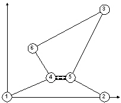

Naum has returned to his village Elshani from abroad, where he has
earned a lot of money. Everyday the people from Elshani go to work in one of
the two neighboring villages Peshtani and Lagadin. There were a lot of paths in
the mountain to their destinations. In order to help his neighbors and shorten
their traveling Naum wants to build one bridge up to certain length Lmax.
Find where to build a bridge that satisfies the following criteria:
·
There will be a new path from Elshani to Peshtani shorter than the
existing shortest path
·
There will be a new path from Elshani to Lagadin shorter than the
existing shortest path
·
The sum of the lengths of the new shortest paths will be minimal.
·
3 £ N £ 2000 is positive
integer and is the number of points.
·
The points are denoted by 1,2,…,N,
where 1 is the starting point (the village Elshani), 2 is one destination point
(the village Peshtani) and 3 is the other destination point (the village
Lagadin). Two points can be connected by only one path. The length of the path
is shortest distance between the corresponding points. From each point there
are at most 20 paths.
·
-32000 £ xi , yi £ 32000 are integers representing the XY
coordinates of the i-th point.
·
M £ 5000 is positive
integer and is the number of paths between the points.
·
Lmax is a positive
real number representing the maximum possible length of the bridge.
·
Rounding errors will not produce irregular answers in test data.
·
If there is a solution then it is unique.
Time limit: 15 sec.
In the first line of the input file there are two integer numbers N and M and one real number Lmax.
In each of the next N lines there are
two numbers xi and yi. In each of the next M lines there are two integer numbers
representing the points connected by a path.
Output file BRIDGE.OUT
If there is a solution, the output consists of two integers K1 and K2 representing the points where the bridge should be built.
If no bridge can be built with the proposed criteria then write 0 0 in
the first line, and write two real numbers d1 and d2 in the
second line as reals with no decimal places. d1 is the shortest distance
from point 1 to 2 and d2 is the shortest distance from point 1 to 3.
BRIDGE.IN
|
BRIDGE.OUT
|
Figure
|
|
6 5
40 0 0 100
0 100
100 45
20 55
20 25
50 1 4 4 6 5 2 5 3 6 3 |
4
5 |
 |
Test
data (zip, 73K)